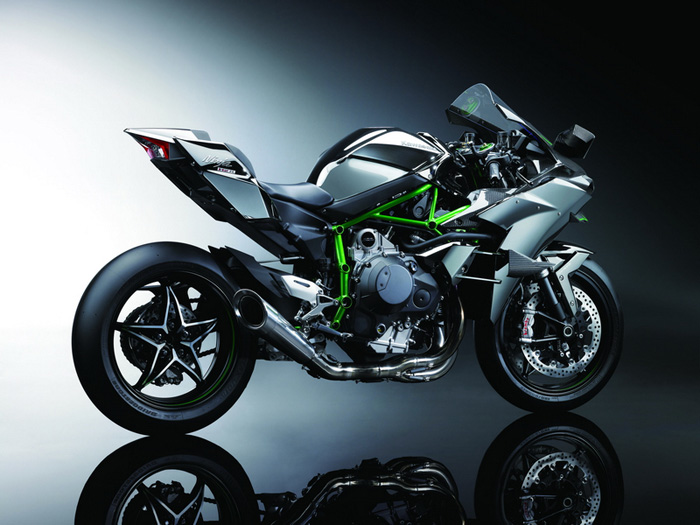

Mohan's Favorite Bike
My name is Mohan my favorite bike is Kavasaki Ninja H2r.The Kawasaki Ninja H2 is a "supercharged supersport"-class motorcycle in the Ninja sports bike series manufactured by Kawasaki, featuring a variable-speed centrifugal supercharger.Its namesake is the 750 cc Kawasaki H2 Mach IV, an inline triple that was introduced by Kawasaki in 1972 to "disrupt what it saw as a sleeping motorcycle market"
If u want to know about this bike.check out this link
Wiki pedia

Reasons to I like this Bike
- The Kawasaki Ninja H2R has a fuel-injection system
- The Kawasaki Ninja H2R retains the potent 998 cc with 6-Speed Transmission.
- The Kawasaki Ninja H2R Engine Power is 305.75 bhp @ 14,000 rpm and the Engine Torque is 165 Nm @ 12,500 rpm.
Why h2r called world's fastest bike
- The Kawasaki Ninja H2R is the ultimate dream motorcycle, if speed is your priority.
- Utilizing a supercharger, the 1000cc, four-cylinder engine develops 326 horsepower and this enables it to be the fastest production motorcycle ever built by any manufacturer.
- Her beauty attracts u